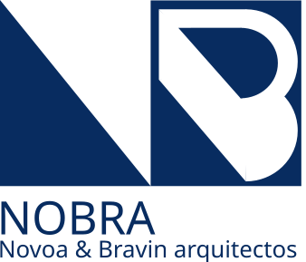

Nobra · Novoa & Bravin Arquitectos
Por qué el sitio
se ve así.
Documento de justificación del sitio web del estudio. Describe las decisiones de fondo —tono, paleta, tipografía, arquitectura de información— y las razones por las que se tomaron.
Lectura del brief.
El brief planteaba un desafío específico: un estudio sin portfolio construido que necesita generar confianza instantánea y convertir visitantes en leads. Toda decisión de diseño en este sitio responde a esa tensión.
Identificamos tres problemas reales que el diseño tenía que resolver, en este orden:
- Confianza. El cliente no tiene obras terminadas que mostrar. La página tiene que comunicar solvencia con otros recursos: tono profesional, sistema visual disciplinado, claridad en procesos y precios.
- Conversión. Sin portfolio, el lead no llega por admirar una obra. Llega porque el sitio le resuelve una duda, le baja la fricción para escribir, o le ofrece algo de valor gratuito (la guía).
- Diferenciación. En Buenos Aires hay docenas de estudios. La oferta integral —proyecto, dirección y ejecución bajo una sola firma— es lo único que objetivamente diferencia a Nobra. El sitio tiene que hacer girar la narrativa alrededor de eso.
El sitio no vende belleza. Vende criterio profesional.
Estrategia central.
Si un visitante se va con una sola idea, esa idea tiene que ser: "Nobra firma de la idea a las llaves." Todo el resto es soporte.
Cuatro apuestas estratégicas
Hacerlo el héroe del sitio.
La página de Servicios abre con un bloque azul completo, dedicado al servicio integral —proyecto + dirección + ejecución—. Es el único bloque del sitio en color de marca pleno, y aparece antes que la lista de los 8 servicios.
Es el único diferenciador objetivo.Decirlo, no esconderlo.
La página El Estudio admite explícitamente "Somos un estudio joven" y lo transforma en argumento de venta: trato directo, dedicación exclusiva, honorarios claros. No ocultamos el dato; le damos vuelta.
Esconderlo se nota más que admitirlo.BIM y toolkit en El Estudio.
Una sección entera dedicada al software que usamos —Revit, ArchiCAD, AutoCAD, Twinmotion, Enscape, Rhino, SketchUp—. Esto convence al lector técnicamente informado de que estamos en el estándar profesional actual.
Compensa la falta de obra ejecutada.Checklist gratuita en cambio de email.
"10 puntos antes de construir" es valor real para alguien que todavía no está listo para reunirse. Capturamos el email, abrimos una conversación y nutrimos el lead. Está en Contacto y como banner flotante en todo el sitio.
Convierte visitantes fríos en leads tibios.Lo que decidimos no hacer
- No inventar obras. Renders sí —son proyectos en curso reales— pero no obras terminadas falsas. Mostrar lo que hay, no lo que no hay.
- No usar fotografía de stock genérica. El sitio prefiere placeholders explícitos (etiquetados como tales) antes que imágenes ajenas. Más honesto y más coherente con el lenguaje arquitectónico.
- No usar testimonios falsos. En vez, métricas verificables: 12 años de experiencia sumada, 48 hs de respuesta, 2 arquitectos directos.
- No prometer plazos ni precios genéricos. Hablamos de cómo trabajamos, no de cifras que no podemos garantizar.
Tono y voz.
El design system define una voz profesional, sobria, cercana —nunca corporativa ni inflada—. La copia se lee como si la firmara un arquitecto hablando con un colega.
Reglas que aplicamos
vos informal en piezas conversacionales (CTA, formulario, copy de servicios).
Hero como manifiesto
La frase del hero —"Pensamos, proyectamos y construimos los espacios que habitás"— funciona como manifiesto: tres verbos que mapean los tres pilares de servicio, y un cierre tuteado que cambia el sujeto de "el espacio" a "tu vida en él". No es una frase de marketing; es la promesa de servicio empaquetada.
Decisiones visuales.
Paleta
Un único color identitario —azul Nobra #082c60—
más una paleta de neutros cálidos derivados del color hueso del papel arquitectónico.
Sin grises fríos. Sin colores saturados. Sin verdes/rojos/amarillos. El azul
aparece en logo, titulares, líneas finas y elementos interactivos; nunca como fondo
decorativo, sólo en bloques de jerarquía máxima ("Llave en mano", Contacto).
El hueso (#f6f4ef) es ligeramente más cálido que blanco puro. Es una
referencia directa al papel arquitectónico y al yeso. Da una temperatura visual
que el blanco frío de los sitios de tecnología no tiene.
Tipografía
Una sola familia: Montserrat. La elegimos porque el SVG del logo ya está construido en Montserrat thin. Cambiar la familia hubiera obligado a rehacer el logo; usar la misma garantiza coherencia entre marca y producto.
- Display (titulares): Montserrat Light 300 con tracking ajustado (
-0.02em). Nunca Bold. El peso liviano comunica calma y disciplina, no agresividad. - Body: Montserrat Regular 400 a 15–17px. Interlineado 1.65–1.7. Aire para que la lectura sea pausada.
- Eyebrows y nav: Montserrat Medium 500 a 11–12px, todo en mayúsculas, tracking
0.18em. Referencia directa al lettering del logo (NOBRA). - Mono: JetBrains Mono para numeración de secciones, metadatos y tags de plano. Refuerza el lenguaje técnico.
- Itálica: sólo en titulares, para énfasis emocional. Nunca en párrafos.
Layout y composición
Grilla de 12 columnas, contenedor máximo de 1440px,
gutter responsivo. Asimetría controlada: títulos a la izquierda, metadatos en
columna estrecha a la derecha. Mucho aire vertical entre secciones
(clamp(80px, 10vw, 140px)) — la respiración hace al lujo, no el adorno.
Numeración explícita de secciones (01 · SERVICIOS,
02 · ESTUDIO) — homenaje al lenguaje de planos. Cada bloque de la
página se siente como una lámina numerada del proyecto.
Detalles que importan
- Radio 0. Todo recto. Excepción: pills de filtro en proyectos. Los bordes redondeados son del software, no de la arquitectura.
- Bordes 1px en
--line. Para todas las divisiones de cards, kv-rows, listas. La línea es el material gráfico, no la sombra. - Sombras: prácticamente nulas. El único uso es en el banner flotante del lead magnet, y es una sombra de tono azul, no gris.
- Animaciones ease-out (
cubic-bezier(0.22, 0.61, 0.36, 1)), sin bounce. 180ms para micro, 360ms para UI, 700ms para reveals. Hover en imagen: scale 1.03 sutil. Nada rebotante. - Header con backdrop-filter blur al hacer scroll. Único uso de transparencia en el sitio. La marca es plana y precisa.
Página por página.
Inicio
El Inicio funciona como resumen ejecutivo: hero declarativo, tres pilares (Proyecto / Dirección / Asesoría) que mapean los tres clusters de servicios, manifesto corto del estudio, y un strip oscuro con cuatro métricas verificables. El usuario que sólo ve esta página tiene que entender: quiénes son, qué hacen, por qué confiar y cómo seguir.
El strip de métricas está en azul de extremo a extremo y aparece antes del footer. Cierra el Home con afirmación, no con un formulario más.
Servicios — la más importante
Brief explícito: "NO usar lista de viñetas. Usar bloques visuales." Resolvimos con tres bloques en cascada:
- Hero + Llave en mano. Page hero con números de plano, seguido inmediatamente por el bloque azul completo que vende el servicio integral. Es el primer impacto.
- Los 8 servicios como filas. Cada fila tiene número, título grande, detalle técnico en mono pequeño, frase de beneficio (no tarea: "Tu idea se vuelve un plano construible" en lugar de "Hacemos planos"), y flecha animada. Hover invierte el fondo. No es lista; es índice.
- Timeline de proceso. Cuatro etapas con barra horizontal — etapa 00 (primera reunión), 01 (anteproyecto), 02 (proyecto ejecutivo), 03 (obra y entrega). Le dice al cliente cómo va a ser trabajar con nosotros.
Proyectos
Cinco proyectos conceptuales, cada uno con tres dibujos (planta + corte/axonometría + detalle), descripción, metadatos (estado, superficie, programa, lote). Los proyectos están etiquetados con su estado real: "Anteproyecto", "Croquis", "Documentación". No mentimos que están construidos.
Las galerías están construidas con SVG line-art generadas en sitio — son placeholders honestos. Cuando lleguen los renders y planos reales del cliente, se reemplazan uno a uno sin tocar el layout. Filtro por tipología (residencial / multifamiliar / comercial).
El Estudio
La página de mayor lectura larga del sitio. Cuatro bloques en orden estratégico:
- Historia. Prosa larga con drop-cap, que admite explícitamente la juventud y la convierte en argumento. Cita arquitectónica de cierre.
- Fundadores. Dos retratos estilizados (pendientes de foto real) con biografía corta, matrícula y especialidad. Personaliza al estudio.
- Toolkit. Ocho herramientas profesionales con marca geométrica, función ("BIM · Modelado") y descripción. Esto es lo que vende solvencia técnica.
- Cierre. Bloque azul completo con CTA. La página termina invitando, no informando.
Contacto
Doble objetivo: lead caliente (formulario) y lead frío (lead magnet). El formulario incluye campos opcionales que ayudan a calificar —presupuesto estimado, plazo, tipo de proyecto— sin volverlo pesado. El lead magnet ofrece la guía descargable abajo de la fold.
El problema de la imagen.
El brief lo plantea como crucial: sin obras construidas, ¿qué fotos usamos? La respuesta del diseño es convertir la ausencia en lenguaje.
Tres estrategias combinadas
- Dibujo arquitectónico como protagonista. Los proyectos se muestran con planos, cortes, axonometrías y detalles —dibujos de arquitecto, no fotos—. Esto refuerza el oficio en vez de simularlo. Y son entregables reales del estudio.
- Placeholders honestos. Donde habría una foto, hay un rectángulo etiquetado: "Render del estudio · próximamente". El visitante entiende que es un sitio nuevo, y eso construye confianza, no la rompe. Es más profesional que stock genérico.
- Tipografía como imagen. El hero, el bloque "Llave en mano", la sección de cierre del Estudio —todos usan tipografía grande sobre fondo plano como recurso visual. La marca NOBRA a 28vw como watermark del hero es una decisión deliberada: la palabra es el visual.
Roadmap fotográfico: a medida que el estudio termine renders, fotografíe bocetos, escanee planos, los puede sumar al sitio sin alterar la estructura. Cada placeholder tiene su contenedor y su aspect ratio definidos. La transición de un sitio sin fotos a un sitio con fotos no requiere rediseño.
Captura de leads.
El sitio tiene tres puntos de conversión, en orden de calidez del lead:
Lo que conscientemente no hicimos: popup modal de email al entrar, chatbot, "salida con descuento", contador de visitas. Todo eso es ruido publicitario que rompe el tono profesional. La conversión se cuida con un diseño que invita, no con tácticas agresivas.
Decisiones técnicas.
#home, #servicios, #proyectos, #estudio, #contacto. Navegación instantánea, sin recarga. Cada cambio de ruta hace scroll al tope.
display: swap.
Pendientes con el cliente.
El sitio está completo como prototipo, pero hay piezas de contenido que sólo el cliente puede definir.
- Misión, filosofía y valores. El design system marca este punto como pendiente. Hoy hay copy provisorio en El Estudio que cubre el espacio; conviene reemplazarlo con la versión definitiva del cliente.
- Biografías y fotos de los fundadores. Hoy hay placeholders de retrato y biografías genéricas. Necesitamos las versiones reales.
- Datos de contacto. Email, teléfono y dirección actuales son placeholders (
estudio@nobra.ar·+54 221 000 0000). - Renders y planos de los 5 proyectos. Las cinco fichas funcionan como contenedores con dibujos placeholder. A medida que estén los renders y planos finales, se reemplazan uno por uno.
- El PDF del lead magnet. "Checklist de 10 puntos antes de construir". Hoy el formulario simula el envío; falta el PDF real y el sistema de envío automático (Mailchimp, ConvertKit, o similar).
- Backend del formulario. Hoy el envío del formulario es simulado. Hay que conectarlo a un servicio (Formspree, Netlify Forms, o backend propio).
- Isotipo aislado. Para favicons y usos pequeños. Pendiente en el design system.
Cada decisión se apoya en algo concreto.
--nobra-blue, --bone), tipografía (Montserrat), tono y voz (vos informal, primera persona plural, sin emoji), reglas de iconografía (Lucide via CDN), animación (ease único sin rebote).